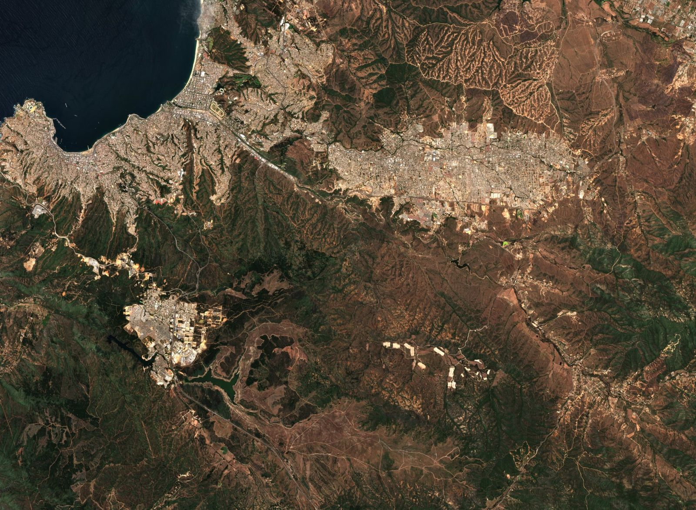
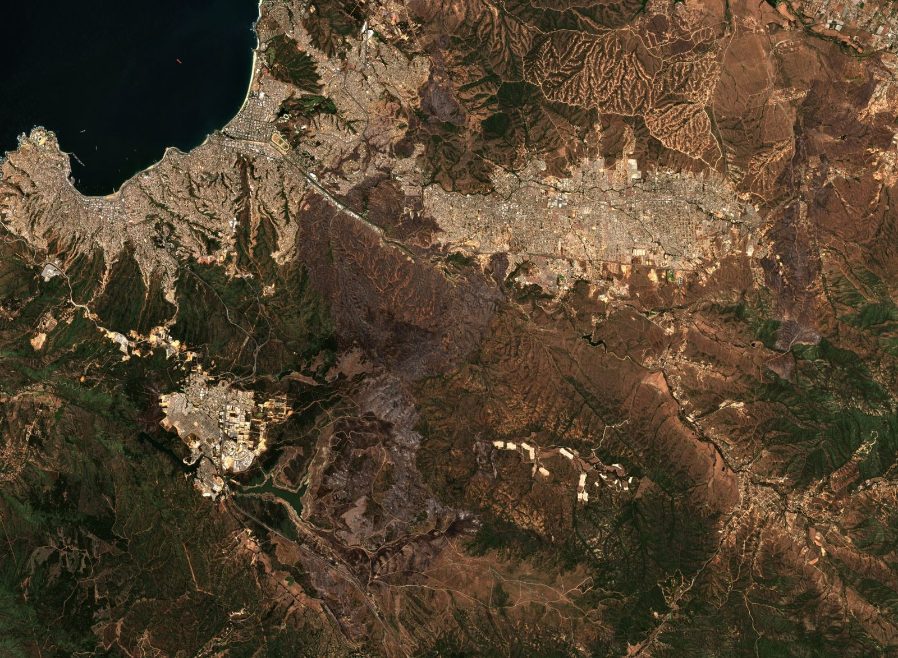

AntesDespuésSeveridad del incendio de Viña del Mar
Un mapa reproducible de la severidad del fuego, calculado desde Sentinel-2 y contrastado con la delimitación del servicio de emergencias de Copernicus.
Mueve el control para pasar de antes a después.
Abrir el mapa interactivo Ver todos los casosCómo verificamos
- Guardamos el original. Cada archivo de una fuente oficial se guarda tal como llegó, con su dirección de origen, la fecha y una huella digital (sha256) que cambia si se altera un solo byte.
- Escribimos el método antes. Las preguntas, los supuestos y las pruebas se fijan antes de mirar los resultados. El código queda abierto para que cualquiera lo rehaga.
- Comprobamos lo publicado. Un programa compara cada cifra de las páginas y fichas con los datos que la producen. Si no calzan, no se publica.